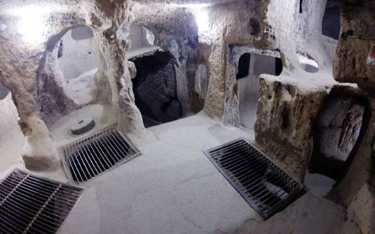

Feenkamine, Felskirchen und unterirdische Städte: Kappadokiens Höhepunkte in zwei Tagen – am ersten Tag die Täler um Göreme, am zweiten die unterirdischen Städte und Ürgüp.
Tag 1

Das Freilichtmuseum Göreme im Herzen Kappadokiens ist eine einzigartige Gruppe von Felskirchen, Kapellen und Klosterbauten im weichen Vulkantuff.

Die Dunkle Kirche im Freilichtmuseum Göreme besitzt die besterhaltenen Fresken Kappadokiens.

Die El-Nazar-Kirche im gleichnamigen Tal bei Göreme ist eine kleine, elegante Kreuzkirche in einem kegelförmigen Feenkamin.

Zelve und Paşabağları bieten die eindrucksvollsten Feenkamine Kappadokiens.

Çavuşin zwischen Göreme und Avanos ist ein altes Dorf mit Felshäusern; darüber liegt die Johannes-der-Täufer-Kirche, eine der ältesten Kappadokiens.
Tag 2

Die unterirdische Stadt Derinkuyu ist eine der tiefsten und größten Kappadokiens.

Die unterirdische Stadt Kaymaklı ist mit Derinkuyu die meistbesuchte Kappadokiens.

Die unterirdische Stadt Özkonak nördlich von Avanos ist in einen Hang gehauen und bekannt für kleine Verbindungslöcher zwischen den Ebenen, wohl für Lüftung und…
Das Museum Ürgüp in einem der lebhaftesten Orte Kappadokiens zeigt Keramik, Skulpturen, Münzen und Grabfunde von der Vorgeschichte bis Byzanz sowie Hausrat, Trachten…

Das Museum Nevşehir ist ein modernes Museum zur Geschichte Kappadokiens von der Vorgeschichte bis zu den Osmanen.
Fertige, tageweise geplante Routen für Ihre Reiseplanung. Zeiten sind Richtwerte; prüfen Sie vor der Reise Öffnungszeiten und Straßenverhältnisse.